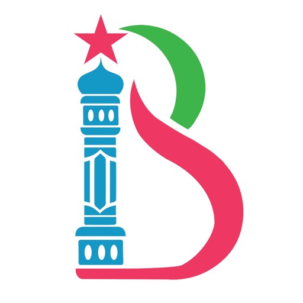

🕌 宗教 App（古兰经/礼拜）
穆斯林 達瓦: 古蘭經 太甫绥鲁 祷告时间段 基卜拉 宣礼
TopOfStack Software Limited
📊 4 国当前榜单排名📊 الترتيب الحالي في 4 أسواق
数据来源：Apple Marketing Tools RSS · 实时榜单 Top 100 المصدر: Apple Marketing Tools RSS · أحدث ترتيب Top 100
🇨🇳
中国الصين
未进 Top 100خارج المئة الأولى
🇪🇬
埃及مصر
未进 Top 100خارج المئة الأولى
🇸🇦
沙特السعودية
未进 Top 100خارج المئة الأولى
🇺🇸
美国الولایات المتحدة
未进 Top 100خارج المئة الأولى
📈 排名历史趋势📈 اتجاه الترتيب التاريخي
基于 22 个时间点的数据 · 每天 06:00 / 22:00 自动更新بناءً على 22 نقاط زمنية · تحديث تلقائي يومياً 06:00 / 22:00
🇨🇳 中国الصين
无进榜记录لم يدخل القائمة
🇪🇬 埃及مصر
无进榜记录لم يدخل القائمة
🇸🇦 沙特السعودية
无进榜记录لم يدخل القائمة
🇺🇸 美国الولایات المتحدة
无进榜记录لم يدخل القائمة
📸 应用截图📸 لقطات الشاشة
无可用截图لا توجد لقطات شاشة
📝 应用描述📝 وصف التطبيق
穆斯林 達瓦 (Muslim Dawah) 是最受欢迎的穆斯林应用程序之一。 这对全世界的亲穆斯林来说是非常必要的。
世界各地的穆斯林使用该应用程序获得最准确的祈祷时间，包括 基卜拉 方向和带有本地翻译、阿拉伯文字和音频朗诵的古兰经。 这是宗教穆斯林最好的伊斯兰应用程序。 穆斯林 Dawah 应用程序可以作为一个整体使用，因为它包含古兰经、祈祷时间、祈求、朝拜指南针、Tasbih、Duas、书、聖訓 和 天課 计算器。
主要特点：
• 古兰经：带有音频朗诵、语音、太甫绥鲁 和 60 种语言翻译的古兰经。
• 祷告时间段：基于您当前位置的准确祈祷时间。 带有 宣礼 音频的警报功能。
• Tasbih：精美的动画计数器来计算您每天的 dhikr。
• 基卜拉 Finder：动画朝拜指南针向您展示前往麦加的方向。
• 清真寺查找器。
• 丰富的杜阿和带音频的恳求集。
• 大量收集了 55000 多篇圣训，包括布哈里、穆斯林圣训、铁密提、纳赛伊、阿布达乌德、伊本马哲、穆斯纳德艾哈迈德、伊玛目马利克的 Al-Muwatta 和其他圣训书籍。
• 5200 多本伊斯兰书籍。
• 真主的 99 个名字
• 天課 计算器。
• 麦加直播。
• 深色模式
• Widget
功能详情：
古兰经：
- 逐部分阅读完整的《古兰经》第 114 章和第 30 段。
- 与至少 15 名古兰经朗诵者一起聆
ℹ️ 基本信息ℹ️ المعلومات الأساسية
| 类别الفئة | Reference |
| 版本الإصدار | 4.9 |
| 大小الحجم | 85.8 MB |
| 发布日期تاريخ الإصدار | 2016-02-26 |
| 更新日期تاريخ التحديث | 2026-02-19 |
| 价格السعر | 免费مجاني |
| 内容评级التصنيف العمري | 4+ |
| 支持设备数عدد الأجهزة المدعومة | 127 |
| 支持语言اللغات المدعومة | SQ, AM, AR, AS, AZ, BM, BN, BS +52 |
| Bundle ID | com.topofstacksoftware.quran.id |
| Track ID | 1086314191 |
🌍 被发现在🌍 تم العثور عليه في
🇨🇳
中国الصين
搜索词كلمة البحث:
古兰经409 评分تقييم
🔍 同品类相似应用🔍 تطبيقات مشابهة في نفس الفئة
مصحف الحرمين Holy Quran
★ 4.65 · 133 评分تقييم
古蘭經
★ 4.71 · 68 评分تقييم
أذان،وقت الصلاة،قرآن بمسلمونا
★ 4.62 · 1.3万 评分تقييم
Athkar - أذكار
★ 4.26 · 6.8万 评分تقييم

إسلام بوك - مواقيت الصلاة
★ 4.71 · 1,750 评分تقييم